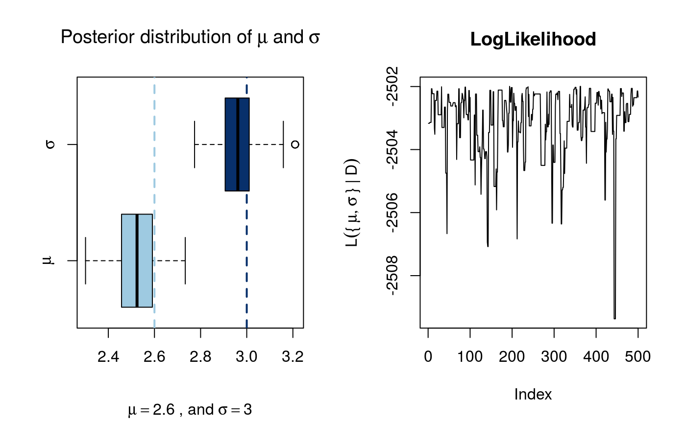

Metropolis-Hastings algorithm using a random walk kernel with reflecting boundaries.
MCMC(fun, ..., initial, nbatch, nchains = 1L, thin = 1L, scale = rep(1, length(initial)), burnin = 1000L, ub = rep(.Machine$double.xmax, length(initial)), lb = rep(-.Machine$double.xmax, length(initial)), useCpp = FALSE, cl = NULL, fixed = rep(FALSE, length(initial)), multicore = TRUE, conv_checker = gelman_convergence(1.1), autostop = 500)
| fun | A function. Returns the log-likelihood |
|---|---|
| ... | Further arguments passed to |
| initial | A numeric vector or matrix with as many rows as chains with initial values of the parameters for each chain (See details). |
| nbatch | Integer scalar. Number of MCMC runs. |
| nchains | Integer scalar. Number of chains to run (in parallel). |
| thin | Integer scalar. Passed to |
| scale | Either a numeric vector of length |
| burnin | Integer scalar. Number of burn-in samples. Passed to
|
| ub | Numeric vector of length |
| lb | Numeric vector of length |
| useCpp | Logical scalar. When |
| cl | A cluster object passed to |
| fixed | Logical vector. If the kth position is |
| multicore | Logical. If |
| conv_checker | A function that receives an object of class coda::mcmc.list,
and returns a logical value with |
| autostop | Integer scalar. Frequency used to check for convergence. By default the function uses gelman_convergence as criteria. |
An object of class mcmc from the coda
package. The mcmc object is a matrix with one column per parameter,
and nbatch rows. If nchains > 1, then it returns a mcmc.list.
This function implements MCMC using the Metropolis-Hastings ratio with scaled standard normal propositions for each parameter. For each parameter the transition function is
$$ \theta' = \theta + scale*z $$
Where \(z\) has standard normal distribution. The MCMC follows a block
sampling scheme, i.e. proposed states are either accepted or rejected
altogether. If length(initial) > 1 and length(scale) == 1,
the value will be recycled so that length(initial) == length(scale).
Lower and upper bounds are treated using reflecting boundaries, this is,
if the proposed \(\theta'\) is greater than the ub, then \(\theta' - ub\)
is substracted from \(ub\). At the same time, if it is less than lb, then
\(lb - \theta'\) is added to lb iterating until \(\theta\) is within
[lb, ub].
If name(initial) == NULL, then a names in the form of par1, par2, ...
will be assigned to the variables.
When nchains > 1, the function will run multiple chains. Furthermore,
if cl is not passed, MCMC will create a PSOCK cluster
using makePSOCKcluster with
detectCores
clusters and try to run it using multiple cores. Internally, the function does
the following:
# Creating the cluster
ncores <- parallel::detectCores()
ncores <- ifelse(nchains < ncores, nchains, ncores)
cl <- parallel::makePSOCKcluster(ncores)
# Loading the package and setting the seed using clusterRNGStream
invisible(parallel::clusterEvalQ(cl, library(amcmc)))
parallel::clusterSetRNGStream(cl, .Random.seed)
In such case, when running in parallel, objects that are
used within fun must be passed throught ..., otherwise the cluster
will return with an error.
In the case of the initial parameter, when using multiple chains, nchains > 1,
the user can specify multiple starting points (which is recommended). In such
case, if initial is a vector, the value is recycled (so all chains start from
the same point), otherwise, if initial is a matrix with as many rows as
chains, then each row of initial is use as a starting point for each of the
chains.
When autostop is greater than 0, the function will perform a convergence
check every autostop steps. By default, the convergence check is done
using the Gelman diagostic as implemented in coda::gelman.diag, so it will
only be calculated when nchains > 1L.
The user may provide a different convergence criteria by passing a different
function via conv_checker. It's current default is gelman_convergence.
# Univariate distributed data with multiple parameters ---------------------- # Parameters set.seed(1231) n <- 1e3 pars <- c(mean = 2.6, sd = 3) # Generating data and writing the log likelihood function D <- rnorm(n, pars[1], pars[2]) fun <- function(x) { x <- log(dnorm(D, x[1], x[2])) sum(x) } # Calling MCMC, but first, loading the coda R package for # diagnostics library(coda) ans <- MCMC(fun, initial = c(mu=1, sigma=1), nbatch = 2e3, scale = .1, ub = 10, lb = 0) # Ploting the output oldpar <- par(no.readonly = TRUE) par(mfrow = c(1,2)) boxplot(as.matrix(ans), main = expression("Posterior distribution of"~mu~and~sigma), names = expression(mu, sigma), horizontal = TRUE, col = blues9[c(4,9)], sub = bquote(mu == .(pars[1])~", and"~sigma == .(pars[2])) ) abline(v = pars, col = blues9[c(4,9)], lwd = 2, lty = 2) plot(apply(as.matrix(ans), 1, fun), type = "l", main = "LogLikelihood", ylab = expression(L("{"~mu,sigma~"}"~"|"~D)) )par(oldpar)# NOT RUN { # In this example we estimate the parameter for a dataset with ---------------- # With 5,000 draws from a MVN() with parameters M and S. # Loading the required packages library(mvtnorm) library(coda) # Parameters and data simulation S <- cbind(c(.8, .2), c(.2, 1)) M <- c(0, 1) set.seed(123) D <- rmvnorm(5e3, mean = M, sigma = S) # Function to pass to MCMC fun <- function(pars) { # Putting the parameters in a sensible way m <- pars[1:2] s <- cbind( c(pars[3], pars[4]), c(pars[4], pars[5]) ) # Computing the unnormalized log likelihood sum(log(dmvnorm(D, m, s))) } # Calling MCMC ans <- MCMC( fun, initial = c(mu0=5, mu1=5, s0=5, s01=0, s2=5), lb = c(-10, -10, .01, -5, .01), ub = 5, nbatch = 1e5, thin = 20, scale = .01, burnin = 5e3, useCpp = TRUE ) # Checking out the outcomes plot(ans) summary(ans) # Multiple chains ----------------------------------------------------------- # As we want to run -fun- in multiple cores, we have to # pass -D- explicitly (unless using Fork Clusters) # just like specifying that we are calling a function from the # -mvtnorm- package. fun <- function(pars, D) { # Putting the parameters in a sensible way m <- pars[1:2] s <- cbind( c(pars[3], pars[4]), c(pars[4], pars[5]) ) # Computing the unnormalized log likelihood sum(log(mvtnorm::dmvnorm(D, m, s))) } # Two chains ans <- MCMC( fun, initial = c(mu0=5, mu1=5, s0=5, s01=0, s2=5), nchains = 2, lb = c(-10, -10, .01, -5, .01), ub = 5, nbatch = 1e5, thin = 20, scale = .01, burnin = 5e3, useCpp = TRUE, D = D ) summary(ans) # }